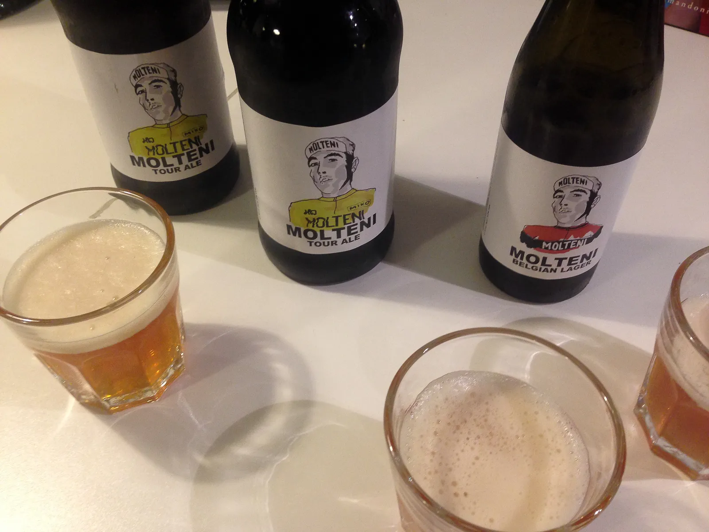

Squadra Molteni-plakatens kunster blev betalt med øl

Squadra Moltenis Eigil Leegaard har i dag været på besøg hos Jeppe Thiemer – manden bag Molteni-plakaten.
Jeppe sad en dag og tegnede. Det kom der den fedeste orange “Eddy Merckx – Molteni” ud af.
Smuk, skøn og stilren.
Jeppe postede tegningen i Velopress’ facebookgruppe – og Eigils grafiske øje spottede den skønne naivistiske tegning med det samme.
Eigil, der til daglig er afdelingsleder på trykkeriet Vejle Print, kontaktede straks Jeppe.
Det er der nu kommet en plakat ud af.
Jeppe er naturligvis blevet betalt for, at vi må bruge hans tegning.
Betalt med Molteni Øl selvfølgelig.
